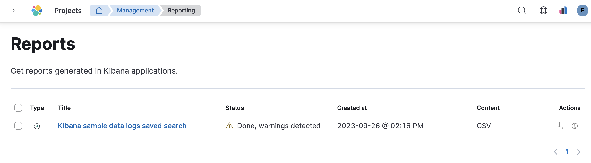

Reports
editThis content applies to: 


Kibana provides you with several options to share saved searches, dashboards, and visualizations.
For example, in Discover, you can create and download comma-separated values (CSV) files for saved searches.
To view and manage reports, go to Project settings → Management → Reports.

You can download or view details about the report by clicking the icons in the actions menu.
To delete one or more reports, select their checkboxes then click Delete reports.